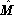
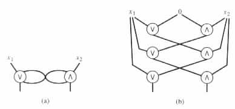
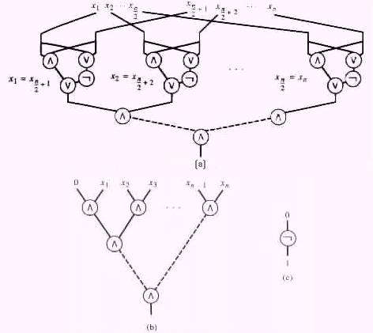

"Table Look-Up" Circuits
"Unrolled Hardware" Circuits
Uniform Families of Circuits
Families of circuits were introduced to help characterize the resources that problems require from parallel machines. The following theorem implies that the families cannot serve such a purpose in their general form, because they can recognize languages that are not recursively enumerable.
Theorem 7.4.1 Each language L in {0, 1}* is decidable by a family of circuits.
Proof Consider any language L in {0, 1}*, and any natural number n. Let Ln denote the set L Ç {0, 1}n. That is, Ln denotes the set of all the binary strings of length n in L.
For any given string w in Ln, a subcircuit cw with n input nodes can be constructed that accepts a given input if and only if the input is equal to w. The language Ln is finite. As a result, the subcircuits cw that correspond to the strings w in Ln can be merged, by letting them share the input nodes and by OR ing their outputs. The obtained circuit cn determines the membership in Ln by a table look-up technique.
Consequently, L is decidable by the family (c0, c1, c2, ¼ ) of circuits.
Example 7.4.1 The circuit c3 in Figure 7.4.1
![[PICT]](draw-pic/theory-bk-seven-7-4-1.jpg)
|
The families of table look-up circuits in the proof of Theorem 7.4.1 have size complexity 2O(n) and depth complexity O(n). These families do not reflect the complexity of deciding the languages, because they assume the knowledge of which strings are in a given language and which are not. That is, the complexity involved in deciding the languages is shifted into the complexity of constructing the corresponding families of circuits.
A circuit can be obtained to characterize a halting computation of a parallel machine  by laying down the portion of the hardware of that is involved in the computation. During the laying down of the hardware, cycles can be avoided by unrolling the hardware. The depth of such a circuit provides a measurement for the time that the computation requires, and the circuits size provides an upper bound on the space the computation requires.
Example 7.4.2 The circuit in Figure 7.4.2(b)
|

|
In a similar way, one can also obtain a circuit cn that corresponds to all the halting
computations of  on instances of length n, n ³ 0. (The outputs for the inputs of a
given length n are assumed to be appended by a string of the form 10 · · · 0 to let
them all have identical lengths.) Consequently, the approach implies a family
C = (c0, c1, c2, ¼ ) of circuits for each parallel machine
on instances of length n, n ³ 0. (The outputs for the inputs of a
given length n are assumed to be appended by a string of the form 10 · · · 0 to let
them all have identical lengths.) Consequently, the approach implies a family
C = (c0, c1, c2, ¼ ) of circuits for each parallel machine  that halts on all inputs.
Moreover, the families of circuits faithfully reflect the complexity of the parallel
computations and can be effectively obtained from each such parallel machine
that halts on all inputs.
Moreover, the families of circuits faithfully reflect the complexity of the parallel
computations and can be effectively obtained from each such parallel machine
 .
.
By the previous discussion, from each parallel machine that halts on all inputs, a circuits constructor can be obtained to compute { (1n, cn) | n ³ 0 }, where C = (c0, c1, c2, ¼ ) is a family of circuits that computes the same function as . The circuits constructor can be one that provides families of table look-up, unrolled hardware, or other types of circuits.
The interest here is in circuits constructors that preserve, in the families of circuits that they construct, the complexity of the given parallel machines. Such constructors do not allow the shift of complexity from the constructed families of circuits to the constructors. Moreover, they also do not allow an unrealistic increase in the complexity of the constructed families of circuits. Circuits constructors with such characteristics are said to be uniform circuits constructors. A family C = (c0, c1, c2, ¼ ) of circuits is said to be uniform if a uniform circuits constructor can compute the function { (1n, cn) | n ³ 0 }.
Many characterizations have been offered for the uniform circuits constructors. The characterization used here, which has been widely accepted, defines these conditions in terms of a class of deterministic Turing transducers.
Definition A Turing transducer is said to be a uniform circuits constructor if it is an O(log Z(n)) space-bounded, deterministic Turing transducer that computes { (1n, cn) | n ³ 0 }, where C = (c0, c1, c2, ¼ ) is a family of circuits of size complexity Z(n). A family C = (c0, c1, c2, ¼ ) of circuits of size complexity Z(n) is said to be a uniform family of circuits if an O(log Z(n)) space-bounded, deterministic Turing transducer can compute { (1n, cn) | n ³ 0 }.
The characterization of uniform families of circuits is motivated by the unrolled hardware approach. With such an approach the circuits constructor needs O(log H(n) + log T(n)) = O(log (H(n)T(n))) space, if the parallel machine has size complexity H(n) and time complexity T(n). O(log H(n)) space is used for tracing through the hardware, and O(log T(n)) space is used for tracing through time. H(n)T(n) is of a similar order of magnitude to the size Z(n) of the circuits.
Example 7.4.3 Consider the language L = { uu | u is in {0, 1}* }. Let Ln = L Ç {0, 1}n for n ³ 0, that is, Ln denotes the set of all the binary strings of length n in L. The language Ln is decided by the circuit cn in Figure 7.4.3(a)
|

|
The family (c0, c1, c2, ¼ ) of circuits is of depth complexity D(n) = O(log n) and size
complexity Z(n) = O(n/2 + n/4 + · · · + 1) = O(n). The family is uniform because the
function { (1n, cn) | n ³ 0 } is computable by a log Z(n) = O(log n) space-bounded,
deterministic Turing transducer.
The following thesis for parallel computations is stated in terms of uniform families of circuits. As in the previous theses for sequential and probabilistic computations, only supportive evidences can be provided to exhibit the correctness of the thesis.
The Parallel Computation Thesis A function can be mechanically computed by a parallel machine of size complexity H(n) and time complexity T(n) only if it has a uniform family of circuits of size complexity p(H(n)T(n)) and depth complexity p(T(n)), for some polynomial p(·).
 0, and n is even. (b) n is odd. (c) n = 0.
0, and n is even. (b) n is odd. (c) n = 0.